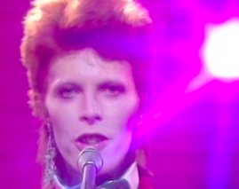
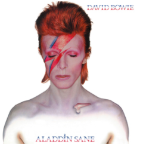

| BIOLOGY | |
| Aladdin Sane Review by Theo Farrell '22 | |
| |
|
|  | Theo Farrell '22 |
|
Hi, and welcome to the first of a series of album reviews written by me, Theo Farrell. In this series I aim to take you back in time and share with you some of the music I love as well as the history behind it. Across my reviews I’ll aim to include some classic, famous albums as well as some alternative music you may not have heard of before. I decided to start this series on account of my long-standing love for music. Music has been a big part of my life for a while now, and I spend a lot of my time in record shops, searching for vinyl to add to my collection. To me it represents a way for each of us to form a unique identity, to relate to others and to find sounds that resonate with us and touch emotions we can’t quite verbalise. This week I’ll be reviewing one of my Top 3 Albums of all time: Aladdin Sane by David Bowie. The first thing we notice when listening to, or buying an album is the cover, and the cover on this album is arguably one of the most recognisable and iconic ever. The bold lightning bolt, orange hair, and whiter-than-white skinny form of Bowie - looking every inch the alien he claims to be, is likely the first image many people think of when the name David Bowie is mentioned. Fitting then, that at the time of production it was the most expensive album cover ever made. That distinct lightning bolt across his face would soon become synonymous with the figure and it represents the inner conflict and split personalities that would come to define much of his career in the 70s and into the early 80s. Cover aside, the album itself is full of the hard, glam rock sound that Bowie started moving towards on his previous album: The Rise and Fall of Ziggy Stardust and the Spiders From Mars. It’s rougher, edgier, larger and darker in every way conceivable compared to its predecessor. This represents Bowie's career at the time, his last album had catapulted him to fame and everything was bigger and brighter, albeit more deranged and manic than before. If the last album was Ziggy’s breakout, Aladdin Sane was Ziggy taking America, the land of dreams, a place where anything was possible. Musically, the album combines gritty, raw guitar with Bowies, powerful and at times fervent vocals, giving the album a post-apocalyptic, alien sound. Songs such as the title track Aladdin Sane take you deeper into the artist's head and provide a psychedelic glimpse into his mental decay and descent into insanity. His amped up cover of the Rolling Stones’ “Let’s Spend the Night Together'' seems to move almost too fast, hurtling along on a collision course that only speeds up for the final chorus. Throughout the track Bowie’s nearly desperate vocals create a palpable sense of yearning and skilfully expose the turbulent heart of a teenage boy's fragile fledgling masculinity. Similarly, the warped ballad, Drive in Saturday speaks to the uncomfortable awkwardness of coming of age that all teenagers will relate to, somewhat painfully perhaps. In particular the line “Don’t forget to turn on the light / Don’t laugh babe, it’ll be alright.” speaks so directly to the self consciousness felt at the outset of a teenage relationship that it’s almost cringeworthy.

My top 3 picks from this album would have to be Drive in Saturday, Panic in Detroit and The Jean Genie and I would strongly recommend everyone reading to give them, as well as the album, a listen. Influenced by Bowie's lengthy American tour prior to recording the album, songs such as Panic In Detroit represent the large American influence on the album, stemming from stories that Bowie had been told by American friends such as Iggy Pop. Indeed many of the songs on the album were written whilst on tour in the States and inspired by the atmosphere in the country at the time. However, personally this was a time of great contrast in Bowie’s personal life. His great commercial highs were opposed by the dark lows of a failing marriage and worsening drug addiction that left him physically weak and mentally fractured. The album title itself, when said out loud, sounds like the words “A lad insane” and this statement very simply represents the state of mind that Bowie felt he was in during 1973. This would only get worse… Overall I would say that any fans of glam rock or hard rock will enjoy what this album has to offer. It’s otherworldly vibe and authentic sound draws the listener into the music and surrounds them. However the rawness of Bowies vocals can be jarring to listeners who are used to a more polished sound. Happy listening to you all and a great week ahead! As always feel free to email me at 21theof@alice-smith.edu.my if you have any recommendations, questions or feedback. Until next time, Theo Farrell P.S: If you want to see the man himself in action here’s a little link to Drive In Saturday performed live, definitely worth a watch. |
LIKE 👍 |
|
Leave a like or comment here! |